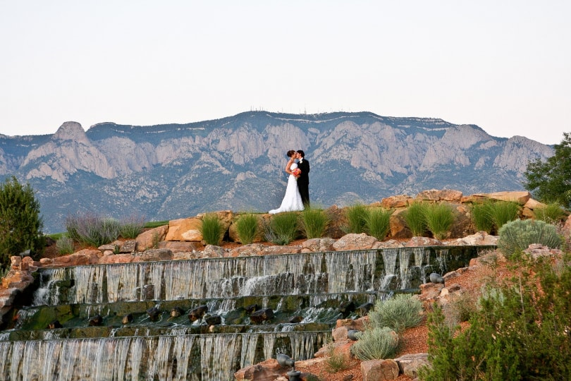
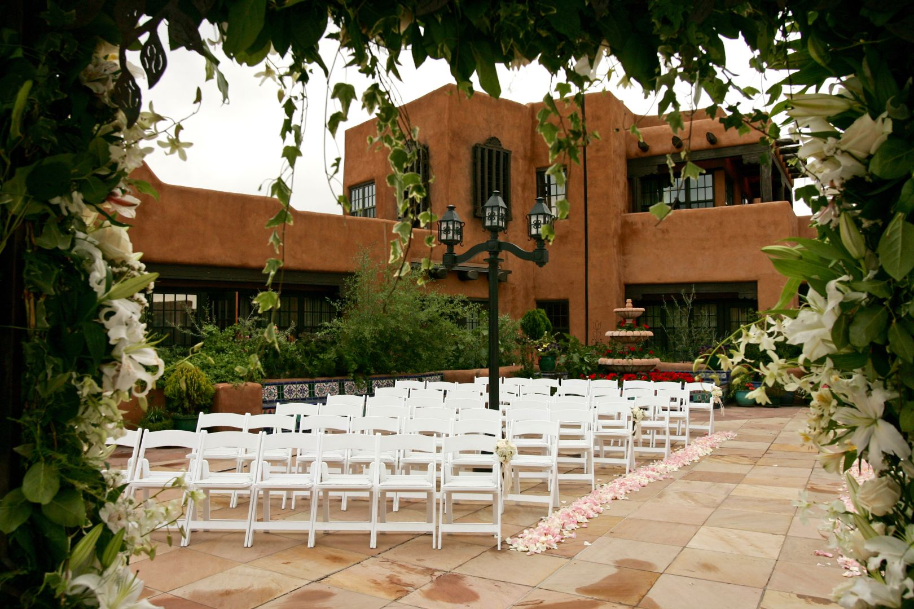
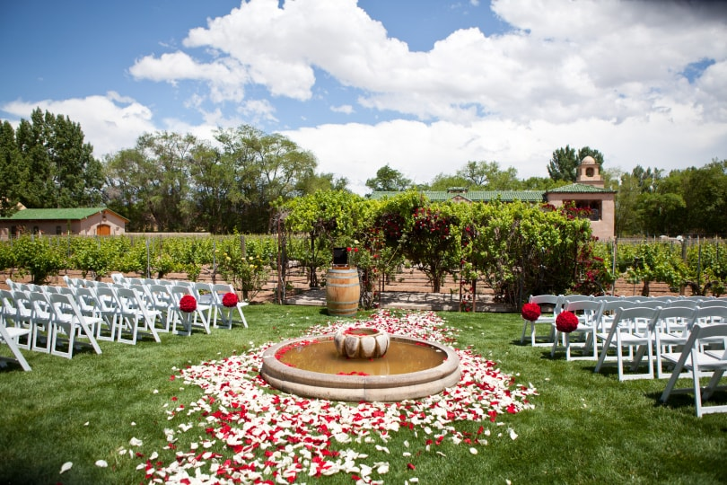
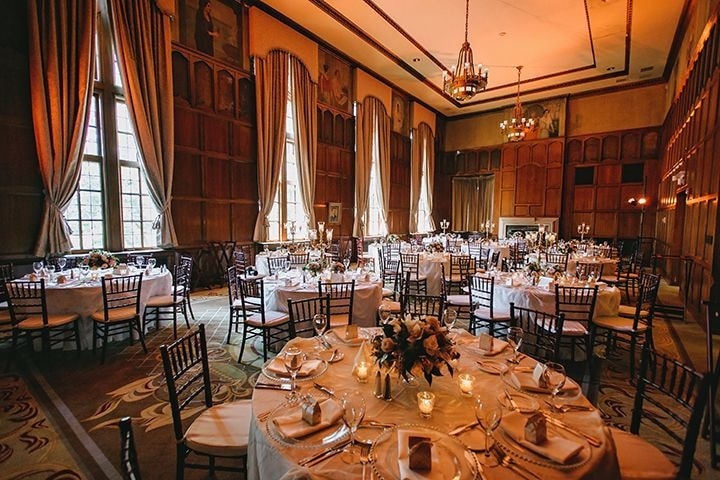
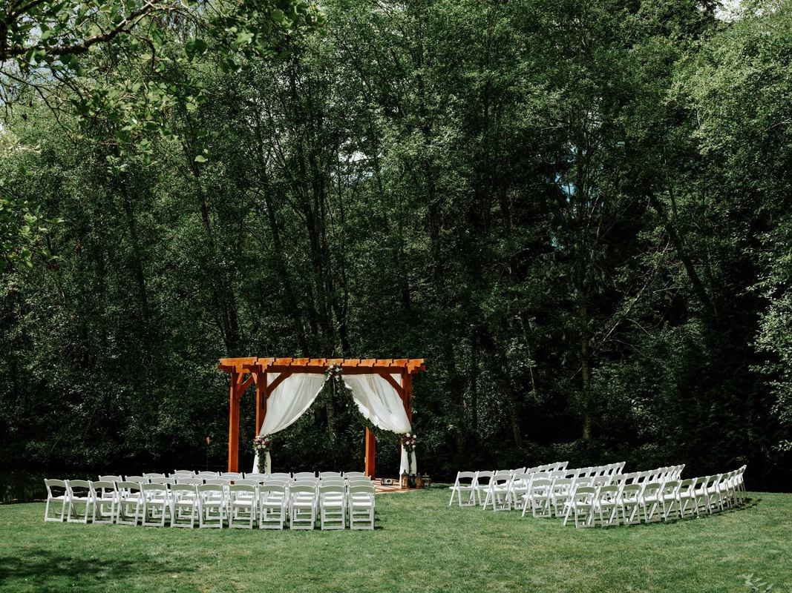
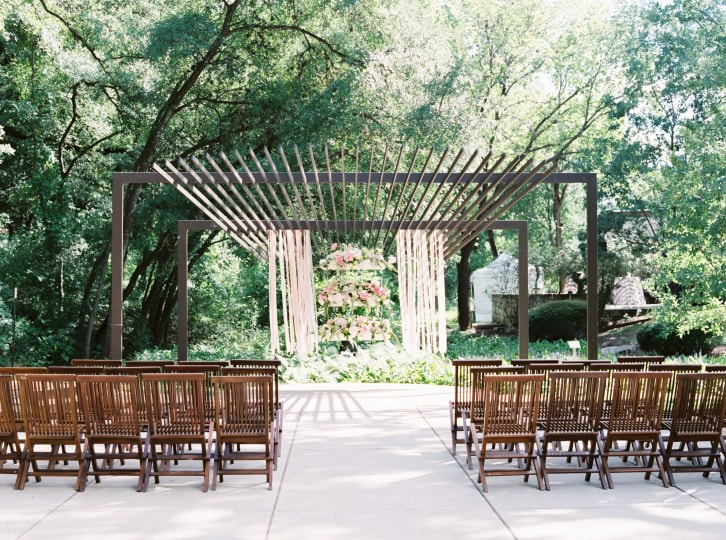

These are some of my dream venues! This information is from WeddingWire.com
Venue #1
Image Credit: https://www.weddingwire.com/biz/sandia-resort-and-casino-albuquerque/726a6d0bb85409f2.html
- City: Albuquerque, NM
- Rating: 4.6/5
- Guests: 40-500
- Peak Season: April-October
- Off-Peak Season: November-March
- Starting Price: $1500 (off-peak), $2000 (peak)
- Available Settings: indoor, outdoor (covered and uncovered)
- Events: ceremony, reception, rehearsal
- More Information
Venue #2
Image Credit: https://www.lafondasantafe.com/weddings?utm_campaign=WeddingWire&utm_medium=referral&utm_source=weddingwire.com
- City: Santa Fe, NM
- Rating: 4.7/5
- Guests: up to 550
- Peak Season: February, June, July, August, September, October, December
- Off-Peak Season: January, February, March, April, November
- Starting Price: n/a
- Available Settings: indoor, outdoor (uncovered)
- Events: ceremony, reception
- More Information
Venue #3
Image Credit: https://www.weddingwire.com/biz/casa-rondena-winery-albuquerque/515e67180c071d2b.html
- City: Albuquerque, NM
- Rating: 4.3/5
- Guests: up to 400
- Peak Season: May-October
- Off-Peak Season: November-April
- Starting Price: $3000 (off-peak), $3500 (peak)
- Available Settings: indoor, outdoor (covered and uncovered)
- Events: ceremony, reception, rehearsal
- More Information
Venue #4
Image Credit: https://www.weddingwire.com/biz/michigan-league-ann-arbor/a916d57fdc3bd9f4.html
- City: Ann Arbor, MI
- Rating: 4.7/5
- Guests: up to 250
- Peak Season: n/a
- Off-Peak Season: n/a
- Starting Price: $500
- Available Settings: indoor, outdoor (uncovered)
- Events: ceremony, reception, rehearsal
- More Information
Venue #5
Image Credit: http://www.cedar-springs.com/wedding-gallery.html
- City: Port Orchard, WA
- Rating: 4.9/5
- Guests: up to 300
- Peak Season: May-September
- Off-Peak Season: n/a
- Starting Price: n/a
- Available Settings: outdoor (covered and uncovered)
- Events: ceremony, reception
- More Information
Venue #6
Image Credit: https://www.weddingwire.com/biz/umlauf-sculpture-garden-museum-austin/01c51efb9f9000d3.html
- City: Austin, TX
- Rating: 4.8/5
- Guests: up to 250
- Peak Season: March, April, May, June, September, October, November, December
- Off-Peak Season: January, February, July, August, September, December
- Starting Price: $2880 (off-peak), $3600 (peak)
- Available Settings: indoor, outdoor (covered and uncovered)
- Events: ceremony, reception
- More Information